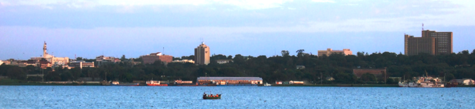
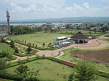
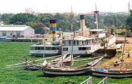
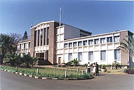

Kisumu county is one of the fastest developing and growing counties in kenya

Kisumu is a county which is well known for its economic activities such as fishing near
lake victoria and also which most of the people rely mostly in fishing.Many parts of kisumu county are very well
developed while others are still catching up since the governor is working on it with the support from the government.

It doesn't only rely on fishing but also in activities such as;
- Transport
- Communication
- Sugar
- Farming
- And lot more
Kisumu county is a place where everyone and a lot of likes to be since it has some of the amaizing and attractive things
which many people around the country and world love to visit.

It has some sites such as lake victoria,kisumu museum which attracts many tourists around the world
and also it is a fun base county because of it's environment.It's also a place to stay since the people of
kisumu are very friendly, welcoming to their county the structures of the buildings are very beautiful to watch,
the roads and more so the place is well organised by the government.Kisumu county has a lot of beautiful sites and
also more places which I have not mentioned where one can manage to travel for fun.

Kisumu county has a well known governor who is known for his leadership ,his exellencyprofessor Anyang Nyongo.
He is one of the best encouraging leaders in our country and also has good leadership qualities.
He's also one of the aspiring and motivative leaders,he's also a true leader since he has led kisumu county to be at the top.